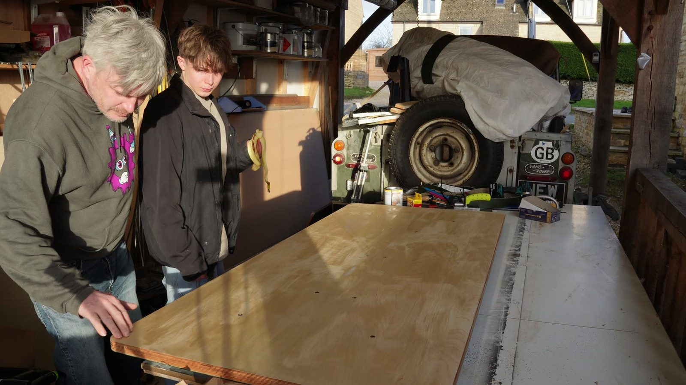
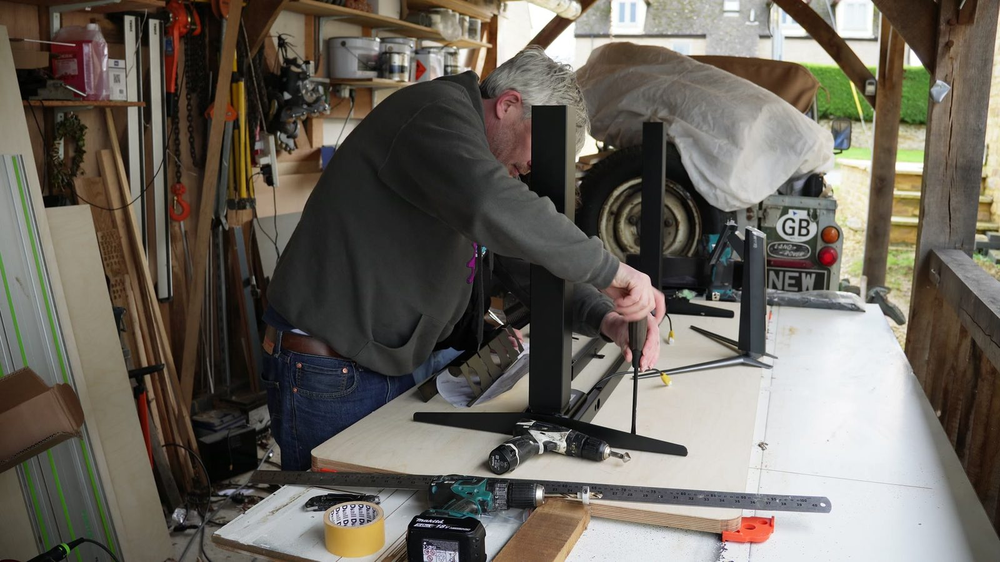
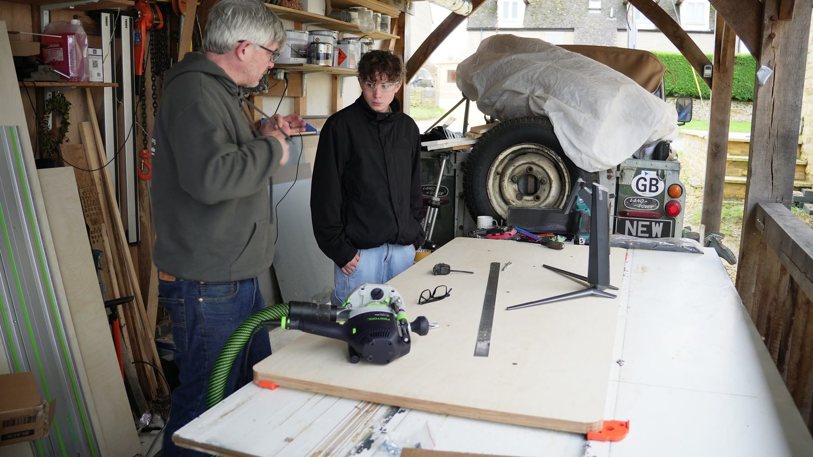

Timber top
Woodwork / standing desk / family workshop
Motorised Standing Desk
Height-adjustable desk, built with my son. Part furniture, part workshop problem, part excuse to spend a day making something together.
Phone footage, shot while working. Measuring, cutting, test-fitting.

- Timber
- —
- Top dimensions
- —
- Lifting frame
- —
- Joinery
- —
- Finish
- —
- Build time
- —
What went wrong
To be written up.
What I would change
To be written up.
Build footage
Building the top
Checking the frame, marking out the top, working the alignment. This is where you find out how far out of square the frame really is.
The build
Why build one at all
I like things that have to survive daily use. Half furniture making, half fitting a motorised frame to a top heavy enough to need it, still working after a thousand cycles.
The best bit
Building with my son
Desk is fine. Getting my son involved in building 'real things away from the virtual world' - awesome.

